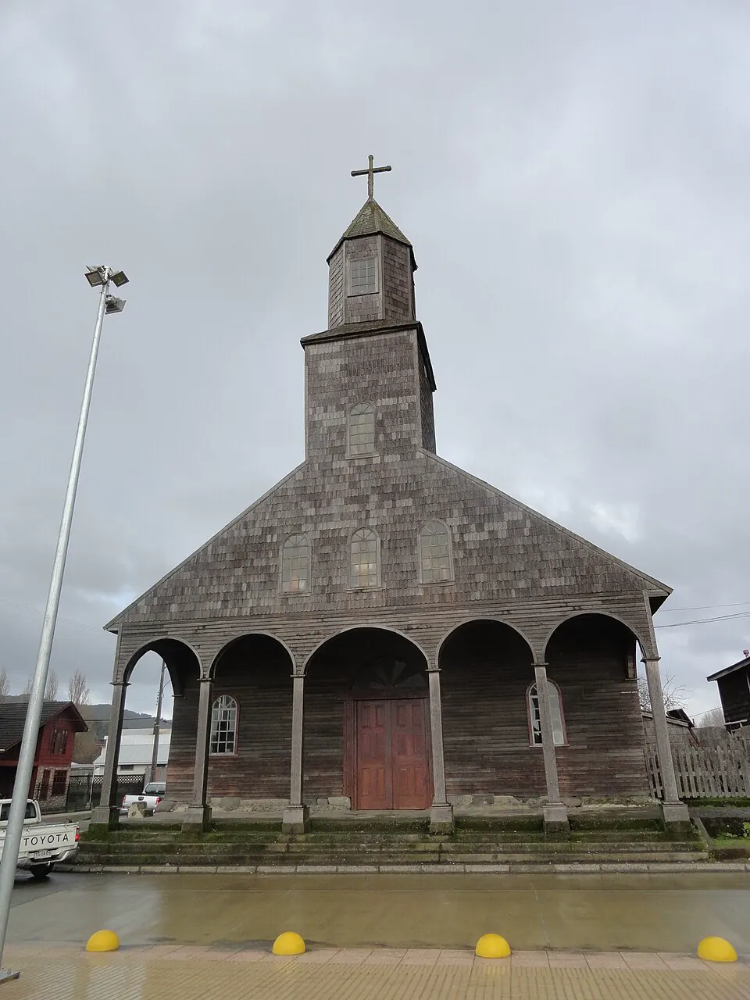

Los jesuitas llegan a Chiloé

Tras el Desastre de Curalaba (1598) y la pérdida de las ciudades del sur, Chiloé quedó aislado del resto de la gobernación de Chile durante la Colonia. En 1608 llegaron al archipiélago los primeros misioneros de la Compañía de Jesús, orden que había arribado a Chile en 1593. Para evangelizar a los huilliche, parte del Pueblo Mapuche, y a otros grupos como el Pueblo Chono, idearon la "misión circular": cada año recorrían las islas en embarcaciones y se detenían unos días en cada capilla. En su ausencia, un fiscal elegido en la comunidad dirigía los rezos y cuidaba el templo.
La evangelización fue también un instrumento del dominio colonial y convivió con la encomienda, que en Chiloé se mantuvo por largo tiempo. Al mismo tiempo, el encuentro entre tradiciones indígenas y europeas dio origen a una cultura chilota particular, visible en la religiosidad, el trabajo comunitario y la arquitectura en madera. Tras la expulsión de los jesuitas en 1767, los franciscanos continuaron su labor. Las iglesias que hoy se conservan se construyeron entre los siglos XVIII y XX, siguiendo esa tradición.
Versión para niños
En 1608 llegaron a Chiloé unos sacerdotes llamados jesuitas. Querían enseñar la religión católica a los pueblos de las islas. Como Chiloé tiene muchas islas, viajaban en botes de isla en isla y visitaban cada comunidad una vez al año. En cada lugar dejaban a una persona de la comunidad encargada de dirigir los rezos y cuidar la capilla. Así nació la tradición de las iglesias de madera, que todavía existen.
Para maestros
Nivel sugerido: 5° básico
Objetivo: Reconocer el papel de la Iglesia en la sociedad colonial y explicar cómo la evangelización en Chiloé contribuyó a formar una cultura mestiza con identidad propia.
Preguntas para la clase:
- ¿Por qué los misioneros tenían que viajar en bote para recorrer su misión?
- ¿Qué elementos de la cultura chilota actual muestran la mezcla de tradiciones indígenas y europeas?
- ¿Qué significó la evangelización para los pueblos originarios del archipiélago?
Actividad (20–30 min): En un mapa del archipiélago, el curso traza una ruta posible de la misión circular uniendo varias islas. Luego observan fotografías de iglesias de Chiloé e identifican materiales, formas y elementos comunes.
Fuentes sugeridas: Memoria Chilena; Biblioteca Nacional Digital; Museo Histórico Nacional.
Objetivos de Aprendizaje (Currículum Nacional)
- 5° básico · HI05 OA 06 Explicar aspectos centrales de la Colonia, como la dependencia de las colonias americanas de la metrópoli, el rol de la Iglesia católica
- 5° básico · HI05 OA 08 Identificar, en su entorno o en fotografías, elementos del patrimonio colonial de Chile que siguen presentes hoy, como edificios, obras de arte y costumbres
- 8° básico · HI08 OA 11 Analizar el proceso de formación de la sociedad colonial americana considerando elementos como la evangelización, la esclavitud
Revisión humana pendiente. Cómo se revisa · Reportar un error
Cómo citar: Historia de Chile. (2026). Los jesuitas llegan a Chiloé. En Historia de Chile: atlas y línea de tiempo. https://moises-salgado.github.io/historia-de-chile/momento/los-jesuitas-llegan-a-chiloe.html